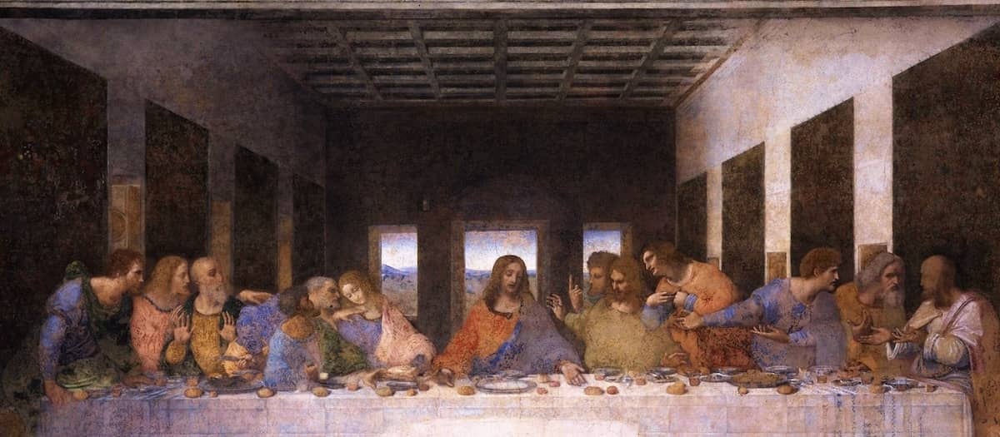
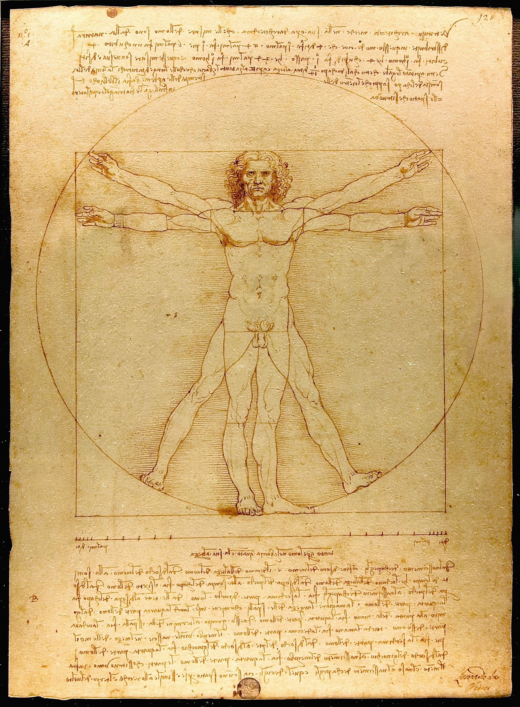

Renaissance • Artist • Inventor • Scientist
LEONARDO
DA VINCI
เลโอนาร์โด ดา วินชี — ศิลปินแห่งยุคเรอเนซองส์ ผู้ใช้ศิลปะเป็นเครื่องมือในการสังเกต ทดลอง และทำความเข้าใจธรรมชาติ
“ศิลปะไม่ได้แยกจากความรู้ แต่เกิดจากการมองโลกอย่างลึกซึ้ง”



ภาพประกอบ: Wikimedia Commons. ใช้เพื่อการศึกษาและการนำเสนอ
ภาพเหมือนที่เชื่อกันว่าเป็น Lisa Gherardini ภรรยาของพ่อค้า Francesco del Giocondo จึงมีชื่ออีกชื่อว่า La Gioconda
จุดเด่นคือรอยยิ้มที่ดูคลุมเครือ ภูมิทัศน์ด้านหลังที่ลึกและพร่ามัว รวมถึงการใช้ sfumato ที่ทำให้ขอบเขตของใบหน้าไม่แข็งเป็นเส้น
ดาวินชีสร้างความรู้สึกว่าตัวแบบมีชีวิตผ่านการจัดท่าทาง แสงเงา การเปลี่ยนโทนสีอย่างละเอียด และการแสดงอารมณ์ที่ตีความได้หลายแบบ